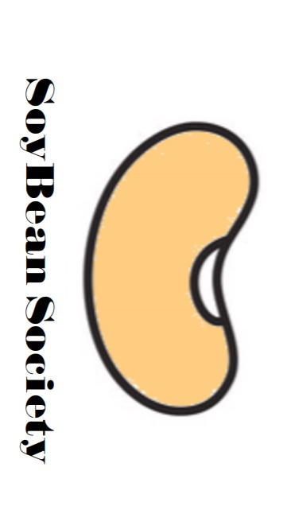
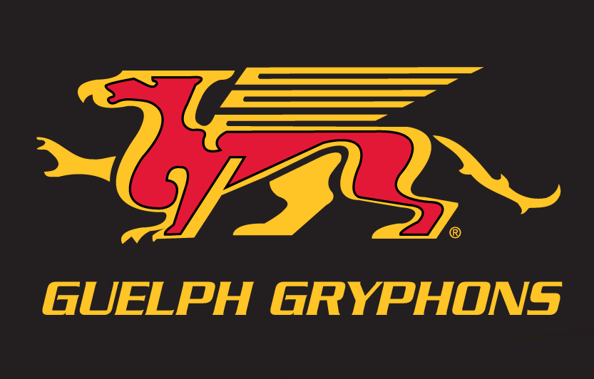

All started with a molecule named DNA
A detailed summary about my academic career, progress, and acheivments I've acheived over my lifetime.
My name is John Raggente. I'm a curious individual who is always trying to understand the meaning behind things. So, when I learned in grade 10 science class that a small molecule called "DNA" is actually the
driver behind life itself I decided to study and understand it as much as I could.
This lead me to pursue a Bachelor's in Molecular Biology and Genetics and the University of Guelph. Throughout my undergrad, I have learned an immense amount more about DNA and have begun unofficially
specializing in plant sciences. Doing research on improving crop plants is of high interest to me and part of what has led me down this path.
I also have a very active life outside of school. I work out regularly, have my own projects, and work part-time. Recently I've become
interested in learning SQL which is a coding language used to manipulate databases. This language is actually very practical and intuitive, and I feel as learning it will benefit me greatly when it comes to dealing with
large amounts of data, which is a given in science.

This project which is associated with the University of Guelph, involved creating a soybean related product to increase marketability and awareness for plant-based products. I decided to base my project
on soybean-made clothing and how it's superior to regular clothing in terms of comfortability, environmental impact, and marketability.

To further my knowledge of plant science, in the summer of 2021, I worked on a soybean and corn
farm to better understand the planning and process behind picking seed varieties and monitoring
crop growth. My responsibilities included note taking and assessment of soybean development, data collection and identification of crop weeds, and
soil sampling. From this experience I had an overall better understanding of the planting process and management for conventional soybean and corn crops.

CARRM (Canadian Association for Research in Regenerative Medicine) is a non-profit organization that does research into
advancing the field of regenerative medicine. They provide funding for research facilities and also spread awareness about the power of stem cells.
I have a very keen interest in cellular agriculture as it relates to my aforementioned interest in agriculture,
so I decided to write an article outlining the exciting possibilities that come with cellular agriculture.

Working for the football team was an enjoyable extracurricular compared to my other activities. I used this opportunity to network
and meet new people, while assisting and helping my Universities football team. My responsibilities included recording practice and game footage,
maintaining storage and proper handling of film equipment, and assisting in equipment setup and troubleshooting.

I think working in this dry bean breeding lab helped reinforce the theories and concepts I was learning
simultaneously during lecture. My responsibilities included preparing seed envelopes and organizing seed lots in preparation for seed packeting,
cleaning specified seed lots to obtain disease free seed with good germination,
counting seeds into prepared envelopes using an electronic seed counter, and
arranging the seed packets into a specified order for future field planting.